10 部片单 · 恐怖 / 科幻 / 惊悚 / 悬疑 / 剧情
| # | 片名 | 类型 | 评分 / 状态 |
|---|---|---|---|
| 01 | 因父之名 | 剧情 / 传记（爱尔兰 / 英国 · 一桩没人愿意重查的爆炸案） | 8.8 / 94% / 84 |
| 02 | 肖申克的救赎 | 剧情 / 犯罪（美国 · 一座监狱里的二十年） | 9.7 / 89% / 82 |
| 03 | 死囚漫步 | 剧情 / 犯罪（美国 · 一位修女与一个死囚） | 8.0 / 95% / 80 |
| 04 | 大卫·戈尔的一生 | 悬疑 / 惊悚（美国 / 德国 / 英国 · 一个反对死刑的人被判了死刑） | 8.6 / 19% / 未收录 |
| 05 | 换子疑云 | 剧情 / 悬疑（美国 · 一个母亲说那不是她的孩子） | 8.4 / 62% / 63 |
| 06 | 熔炉 | 剧情 / 犯罪（韩国 · 一所聋哑学校里发生的事） | 9.3 / 72% / 75 |
| 07 | 辩护人 | 剧情 / 历史（韩国 · 一个只想赚钱的律师） | 9.2 / 77%* / 55 |
| 08 | 全民目击 | 悬疑 / 犯罪（中国大陆 · 一场翻三次的庭审） | 7.7 / 未收录 / 未收录 |
| 09 | 十二公民 | 剧情 / 悬疑（中国大陆 · 一间屋子里十二个人） | 8.4 / 未收录 / 未收录 |
| 10 | 误杀 | 悬疑 / 犯罪（中国大陆 · 一个父亲把时间剪碎了） | 7.5 / 9.5 / 9.3 |
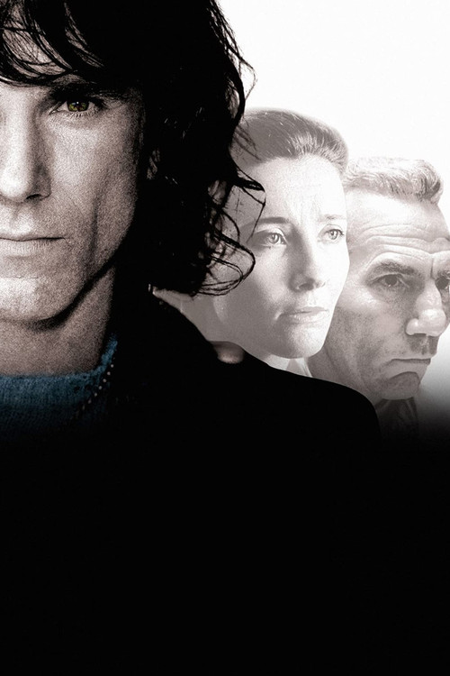
因父之名 In the Name of the Father
「以真相之名。以正义之名。以爱之名。」
剧情梗概
1974 年伦敦。贝尔法斯特来的小偷格里·康隆在错误的时间出现在错误的地方，被当成爱尔兰共和军爆炸案的主犯抓了起来。警方要的是结案，不是凶手。他和一起被抓的四个人在没有读过的认罪书上签了名；父亲朱塞佩赶来照顾他，也一起进了监狱。父子俩在同一套牢房系统里待了十五年，直到一位女律师从案卷的角落里翻出一份警方自己都没看过的供词。
亮点
- 爱尔兰导演吉姆·谢里登与特瑞·乔治共同编剧，改编自格里·康隆本人的回忆录《证明无罪》；这是谢里登继《我的左脚》之后第二次入围奥斯卡最佳导演。
- 成本约 1300 万美元，全球票房约 6580 万美元；1994 年柏林电影节金熊奖，奥斯卡七项提名（最佳影片、导演、改编剧本、男主、男配、女配、剪辑）。
- 丹尼尔·戴-刘易斯为这个角色减重约 30 磅，拍摄期间夜里睡在牢房布景里，让工作人员往他身上泼水、对他辱骂。
- 皮特·波斯尔思韦特演父亲朱塞佩，凭此片拿到他人生唯一一次奥斯卡最佳男配角提名——这位英国演员大半辈子都在演配角。
- 艾玛·汤普森演的是真实人物、律师加雷斯·皮尔斯，全片她的戏份不到二十分钟，但她是唯一一个在翻卷宗的人。
- 豆瓣 8.8 / 烂番茄 94% / Metacritic 84 / IMDb 8.1：四个平台高度一致，Metacritic 84 是本期专业评价最高。
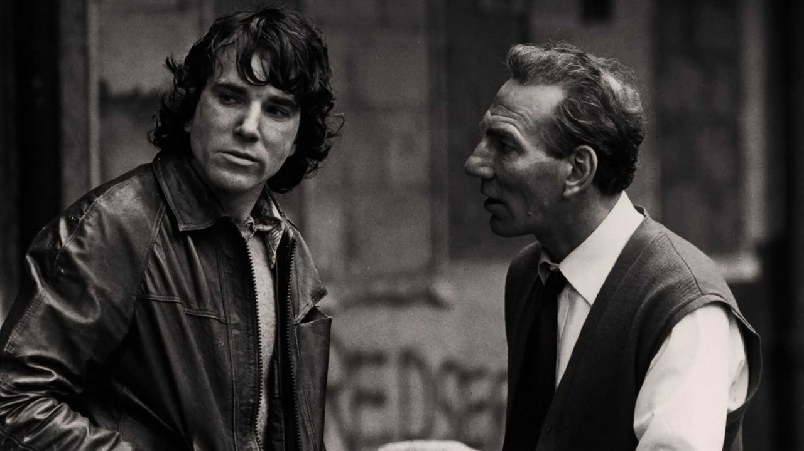
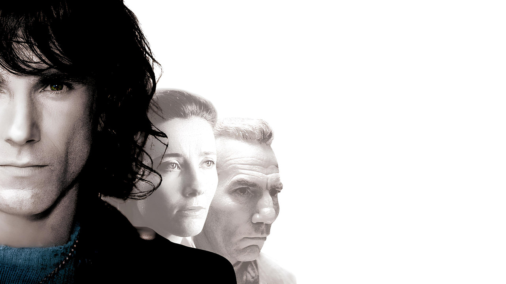
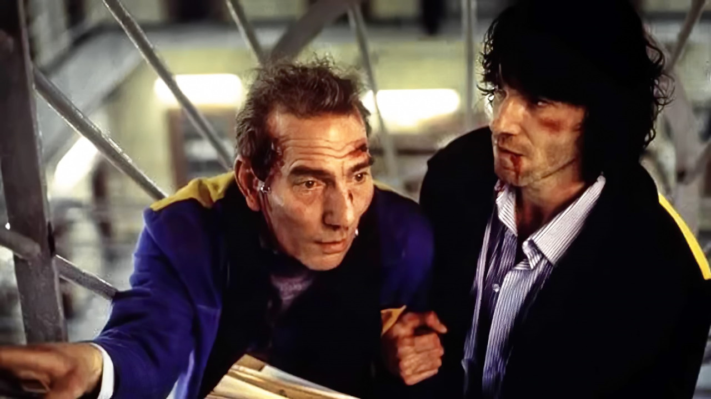
导演与主创 · 他们的历史作品
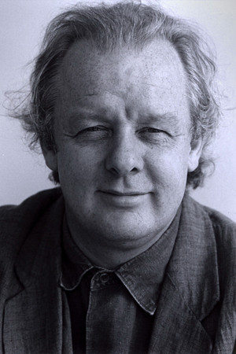
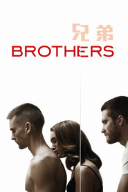
兄弟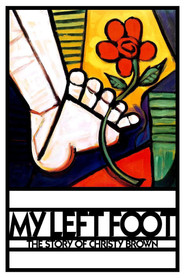
我的左脚
 血色将至
血色将至 林肯
林肯 魅影缝匠
魅影缝匠 纽约黑帮
纽约黑帮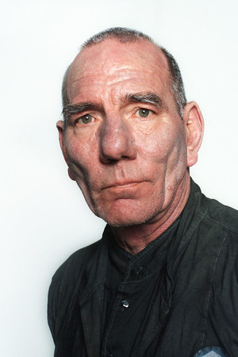
 盗梦空间
盗梦空间 侏罗纪公园2：失落的世界
侏罗纪公园2：失落的世界 非常嫌疑犯
非常嫌疑犯 诸神之战
诸神之战短评（轻微剧透）
轻微剧透：真正的转折不在平反，在他们被关进去之前——那份认罪书是警察念给他们听的，他们没看就签了，因为当时没人相信不签会有区别。轻微剧透：谢里登最狠的一处设计，是把父子俩放在同一座监狱里却让他们隔着等级互相够不着：父亲先病倒，儿子才第一次知道自己的案子把父亲拖了进来。结尾那场庭审没有欢呼，只有一句记录在案的话——那才是这部片真正要的东西。
为什么值得一看
想看「冤案片怎么不靠煽情也能压住人」的人；能接受 133 分钟、中段节奏偏慢、英爱政治背景需要一点功课的观众。R 级，含监狱暴力与辱骂画面，建议高中以上观看。内地未映，流媒体可看。看完想继续：《飓风》《辩护人》《死囚漫步》。
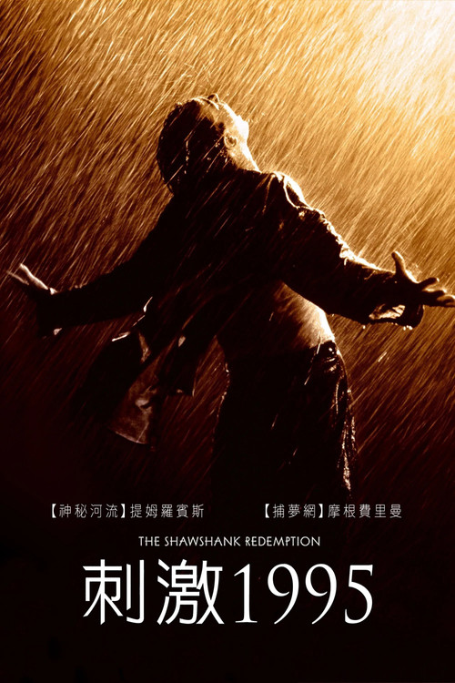
肖申克的救赎 The Shawshank Redemption
「有些鸟是关不住的。」
剧情梗概
1947 年，银行家安迪·杜佛兰被判谋杀妻子及其情人，两个无期徒刑，进了肖申克监狱。他没有喊冤，只是按部就班地活：先要一把小锤子，再要一张海报，然后是图书馆、税务、音乐。他帮狱警避税，帮典狱长洗钱，也帮狱友考文凭。二十年后，那把小锤子终于用上了。
亮点
- 弗兰克·德拉邦特自编自导，改编自斯蒂芬·金的中篇小说《丽塔·海华丝与肖申克的救赎》；这是他的第二部长片，此前只拍过《生人活埋》。
- 成本约 2500 万美元，1994 年北美首轮票房只有约 1600 万美元，被发行方定性为失败作品；全球票房最终约 5830 万美元。
- 1995 年第 67 届奥斯卡七项提名（最佳影片、最佳男主角、最佳改编剧本等），一奖未得——那一年它输给了《阿甘正传》。
- 摩根·弗里曼演瑞德，凭此片拿到他人生第一个奥斯卡提名；蒂姆·罗宾斯演安迪。蒂姆·罗宾斯是本期的两位导演之一，他在本期的《死囚漫步》里坐在了导演椅上。
- 配乐由托马斯·纽曼写；那段莫扎特《费加罗的婚礼》从广播里飘出监狱的戏，是全片唯一一次没有对白的两分钟。
- 豆瓣 9.7（超过 300 万人评价，长期位列豆瓣电影 TOP250 第一）/ 烂番茄 89% / Metacritic 82 / IMDb 9.3（IMDb TOP250 第一）：本期四个平台全部最高。
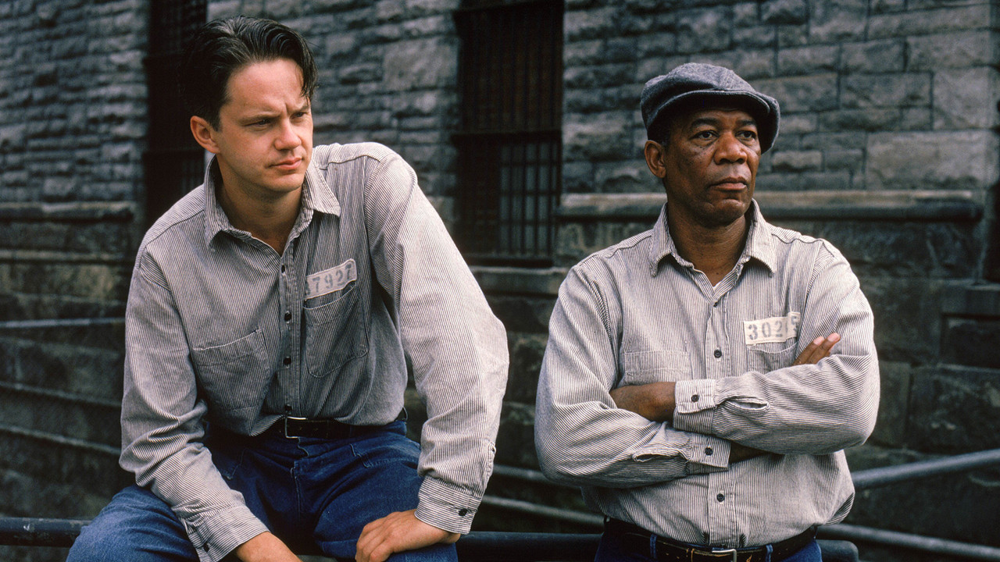
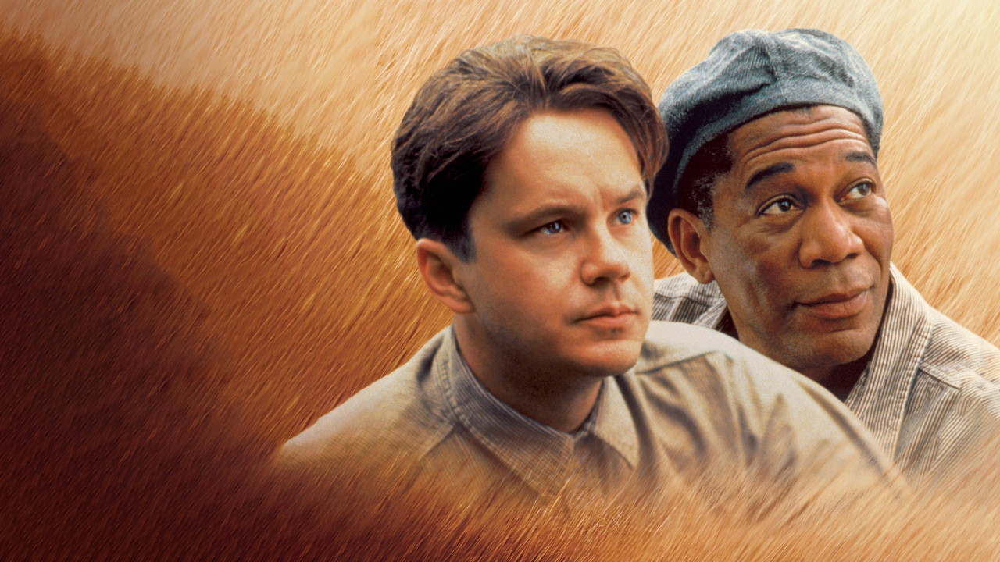
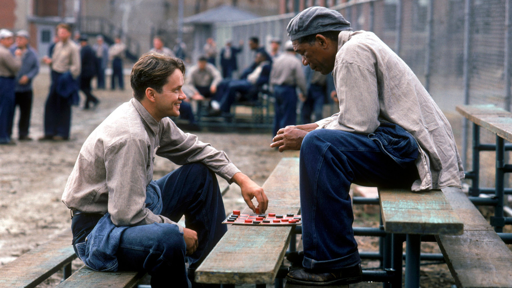
导演与主创 · 他们的历史作品

 绿里奇迹
绿里奇迹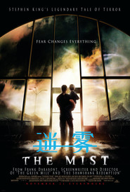
迷雾 电影人生
电影人生 生人活埋
生人活埋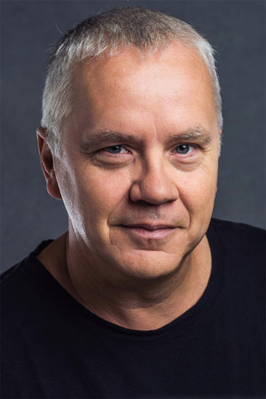
 神秘河
神秘河 世界之战
世界之战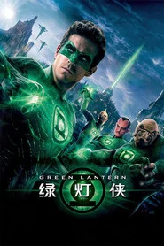
绿灯侠
 七宗罪
七宗罪 超体
超体 遗落战境
遗落战境短评（轻微剧透）
轻微剧透：真正的转折不在越狱，在安迪终于开口说出「那不是我干的」——到那时他已经认了二十年，所以这句话说出口时他不是在申辩，是在还给自己一个说法。轻微剧透：这部片把「希望」写成了一项技能而不是一种情绪：图书馆、啤酒、唱片、棋盘，全都是他每天做一点点的东西。结尾瑞德在雨里张开手臂的镜头是全片唯一一次把情绪放出来，而它撑得住，是因为前面两个小时一直忍着。
为什么值得一看
想看「二十年怎么被拍成两个小时」的人；能接受几乎没有女性角色、前半段节奏慢、结局理想化的观众。R 级，含监狱暴力与自杀情节，建议高中以上观看。2026 年 8 月以 4K 修复版首次在内地公映，流媒体可看。看完想继续：《绿里奇迹》《死囚漫步》《美丽人生》。
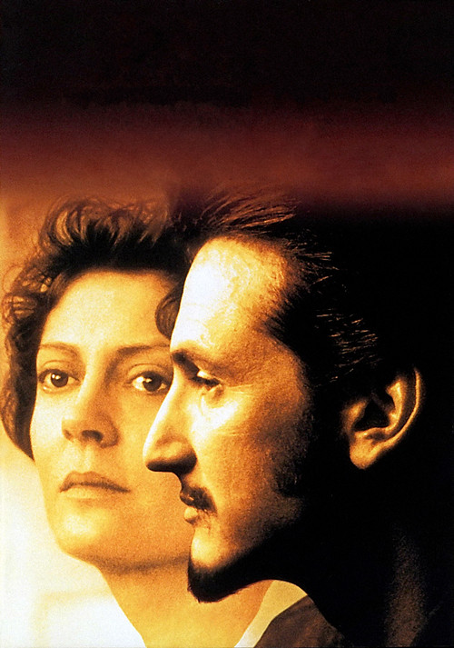
死囚漫步 Dead Man Walking
「我只是想在他死之前，让他看着我。」
剧情梗概
路易斯安那。死囚马修·庞斯莱特还有 168 小时，他写信给修女海伦·普雷让，请她来做自己的精神顾问。海伦去见了他，然后去见了被害人的父母——一对失去儿子的夫妻，还有一对失去女儿的夫妻。她两头跑，一边替马修找律师、申请听证，一边陪着被害人家属等一个结果。马修始终坚持自己没杀过人。
亮点
- 蒂姆·罗宾斯自编自导，改编自修女海伦·普雷让 1993 年的同名纪实作品；这是他的第二部导演作品，此前他只导过《鲍勃·罗伯茨》。
- 成本约 1100 万美元，全球票房约 8300 万美元；苏珊·萨兰登凭此片拿到第 68 届奥斯卡最佳女主角。
- 西恩·潘演马修，拿到奥斯卡最佳男主角提名；罗宾斯拿到最佳导演提名；布鲁斯·斯普林斯汀的主题曲《Dead Man Walkin'》也入围了最佳原创歌曲。
- 真实的海伦·普雷让本人出现在监狱外烛光守夜那场戏里，不是演员扮的。
- 彼得·萨斯加德在这部片里第一次上大银幕，演其中一个被害人的家属。
- 豆瓣 8.0 / 烂番茄 95% / Metacritic 80 / IMDb 7.5：本期烂番茄最高（95%），专业评价第二。
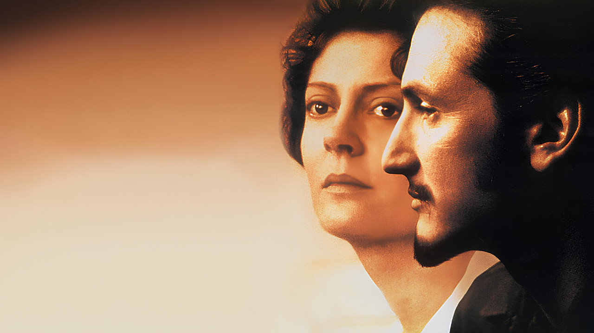
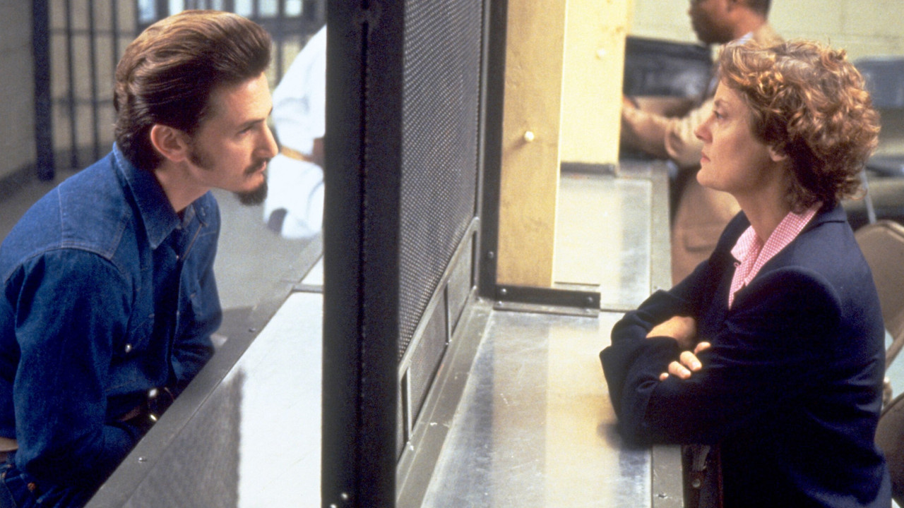
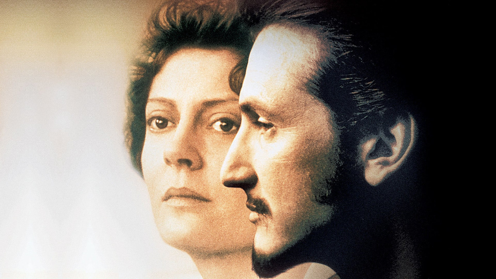
导演与主创 · 他们的历史作品
 肖申克的救赎神秘河世界之战
肖申克的救赎神秘河世界之战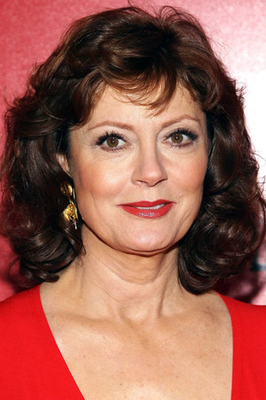
 末路狂花
末路狂花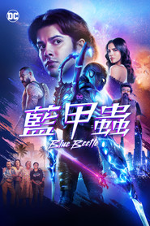
蓝甲虫 神秘河
神秘河 心理游戏
心理游戏 21克
21克 白日梦想家
白日梦想家短评（轻微剧透）
轻微剧透：真正的转折不在马修认不认罪，在海伦第一次走出监狱、坐进被害人家属的客厅——那一刻你才发现这部片不是「要不要废除死刑」的辩论赛，是两种痛苦被放在了同一张桌子上。轻微剧透：罗宾斯最克制的一处是行刑那场戏：没有配乐、没有慢镜头，只有程序，一针一针按流程走完。马修最后对着被害者父母说的那句话，是全片唯一一次让镜头停在别人的脸上。
为什么值得一看
想看「死刑议题怎么被拍成一部不站队的电影」的人；能接受 122 分钟几乎全是对话、立场让人不舒服、看完会闷着的观众。R 级，含犯罪回忆与行刑程序画面，建议高中以上观看。内地未映。看完想继续：《大卫·戈尔的一生》《因父之名》《绿里奇迹》。
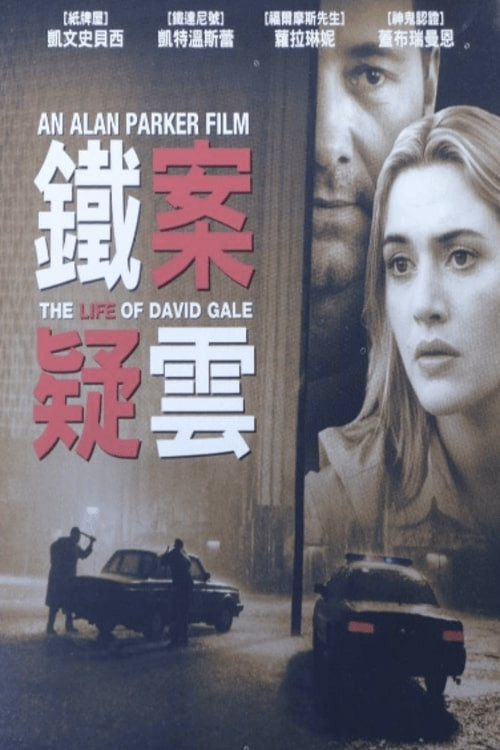
大卫·戈尔的一生 The Life of David Gale
「我不是要你救我。我要你听我说完。」
剧情梗概
得克萨斯。大学哲学教授大卫·戈尔是个坚定的废除死刑倡导者，却因为强奸并谋杀同事康丝坦斯被判死刑。行刑前三天，记者贝茜·布鲁姆拿到了独家采访。她只有七十二小时，而她越查越不对：指控他的那个女学生、那份被反复修改的测谎、那盘没人说得清来路的录像带，全都指向另一个方向。
亮点
- 英国导演艾伦·帕克（《午夜快车》《迷墙》《天使之心》），剧本由查尔斯·伦道夫写；本片入围第 53 届柏林电影节金熊奖，也是帕克导演生涯的最后一部剧情长片。
- 成本约 3800 万美元，全球票房约 3900 万美元；北美口碑失利，专业评价与观众评价出现罕见的两极分化。
- 凯文·史派西演大卫·戈尔，凯特·温斯莱特演记者贝茜；劳拉·琳妮演康丝坦斯——她凭同年的《神秘河》入围了奥斯卡最佳女配角。
- 帕克把大量真实辩论材料写进了台词：得州的死刑执行数字、误判率、测谎的不可靠性，都是照着当年公开资料来的。
- 全片用倒叙与采访交织，三条时间线靠一盘录像带串起来——这盘带子究竟是什么时候拍的，就是谜底。
- 豆瓣 8.6 / 烂番茄 19% / Metacritic 未收录 / IMDb 7.5：本期口碑落差最大的一部，豆瓣比烂番茄高出六十七个百分点。
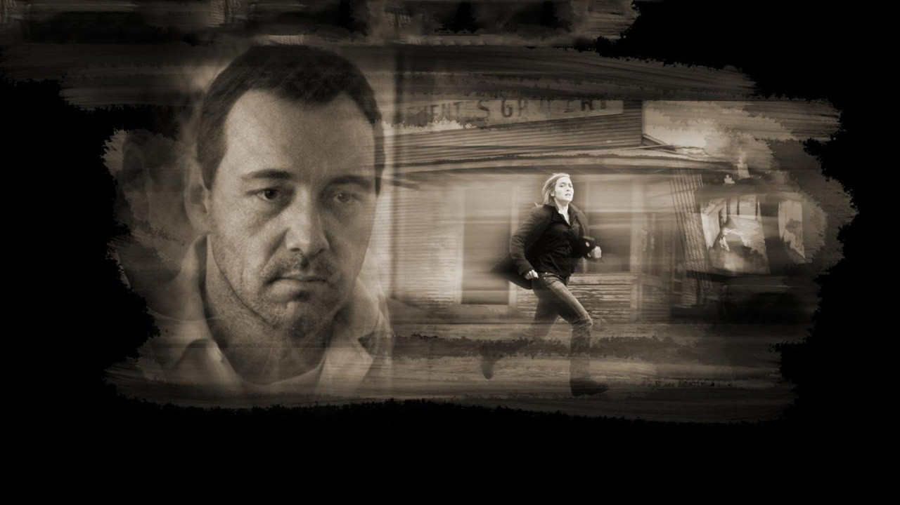
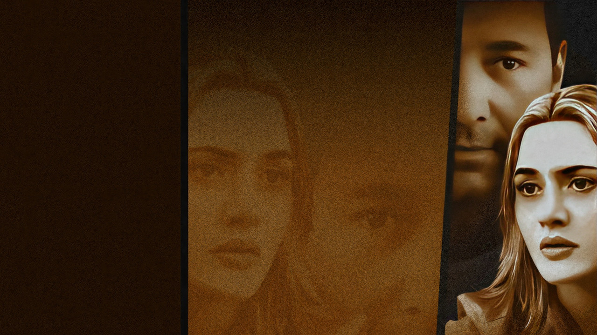
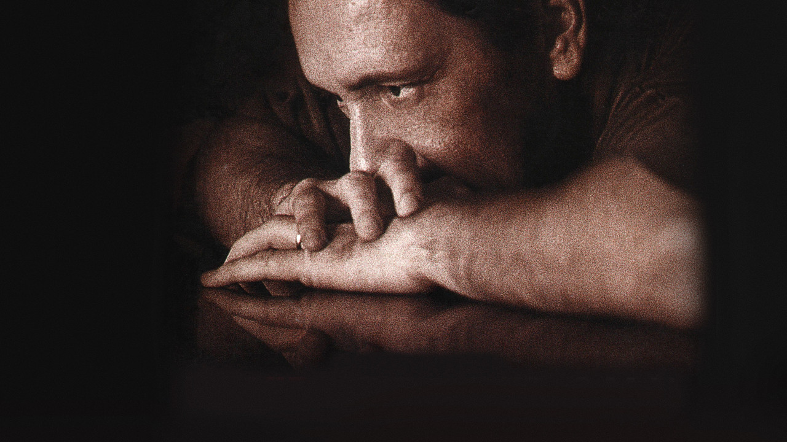
导演与主创 · 他们的历史作品
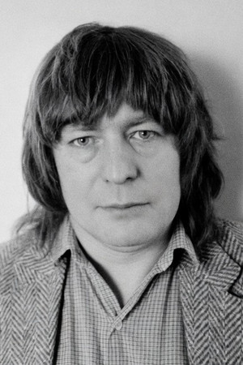
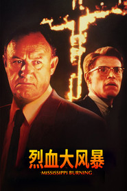
烈血大风暴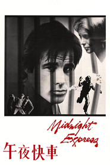
午夜快车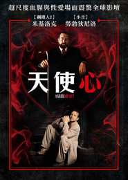
天使之心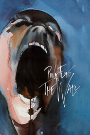
迷墙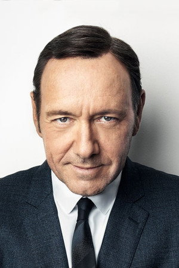
 美国丽人
美国丽人 极盗车神
极盗车神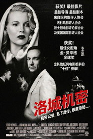
洛城机密 泰坦尼克号
泰坦尼克号 阿凡达：水之道
阿凡达：水之道短评（轻微剧透）
轻微剧透：真正的转折在贝茜发现那盘带子上的日期——它比她以为的晚了三天，而这三天决定了所有人的动机。轻微剧透：这部片真正冒犯评论界的地方，是它把「反对死刑」拍成了一次设计好的献祭：不是论证，是做出了一个样本。你可以说它用力过猛、说它算计，但没法说它没敢下注。结尾那盘带子被公开播放的镜头，是帕克留给观众的一道道德选择题。
为什么值得一看
想看「悬疑片敢把立场押到最后一分钟」的人；能接受中段说理偏多、部分情节经不起细抠、结局极端化的观众。R 级，含暴力与性侵相关陈述，建议高中以上观看。内地未映。看完想继续：《死囚漫步》《全民目击》《一级恐惧》。
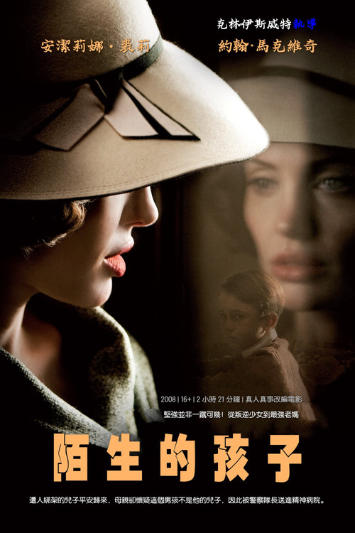
换子疑云 Changeling
「那不是我的儿子。」
剧情梗概
1928 年洛杉矶。克里斯汀·柯林斯下班回家，九岁的儿子沃尔特不见了。五个月后警方把一个男孩交还给她，说这就是沃尔特。克里斯汀一眼就看出不是。她反复说、反复举证、反复被驳回，最后被送进了精神病院——因为一个不肯闭嘴的女人，比一个失踪的孩子好处理得多。
亮点
- 克林特·伊斯特伍德自导自制并亲自配乐，剧本由《巴比伦5号》的 J·迈克尔·斯特拉辛斯基写，大量对白直接取自庭审记录。
- 成本约 5500 万美元，全球票房约 1.13 亿美元；入围戛纳主竞赛，奥斯卡三项提名（最佳女主角、摄影、美术指导）。
- 安吉丽娜·朱莉演克里斯汀，凭此片拿到她第二个奥斯卡最佳女主角提名；约翰·马尔科维奇演那位在电台里替她说话的牧师布里格勒布。
- 改编自真实事件「葡萄酒维尔鸡舍谋杀案」；斯特拉辛斯基是翻遍市政档案与旧报纸才把这个案子挖出来的。
- 伊斯特伍德的配乐只有一架钢琴、几乎不着痕迹——这是他为自己的电影写过的最克制的音乐。
- 豆瓣 8.4 / 烂番茄 62% / Metacritic 63 / IMDb 7.7：专业评价中庸，但在华语观众里的口碑一直很稳。
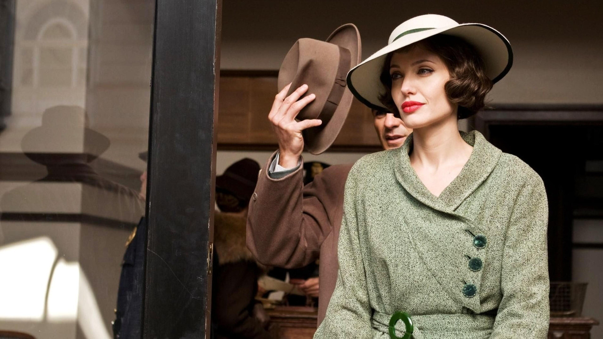
导演与主创 · 他们的历史作品
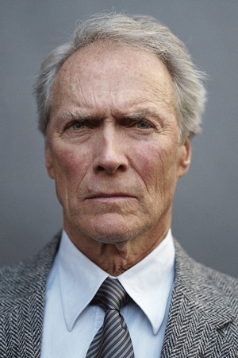
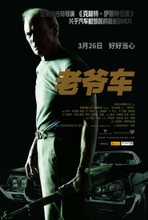
老爷车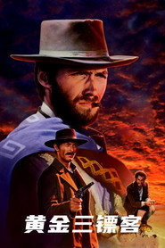
黄金三镖客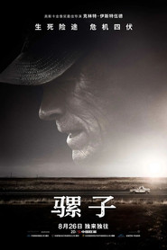
骡子 沉睡魔咒
沉睡魔咒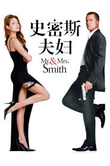
史密斯夫妇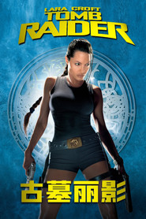
古墓丽影 沉睡魔咒2：恶魔夫人
沉睡魔咒2：恶魔夫人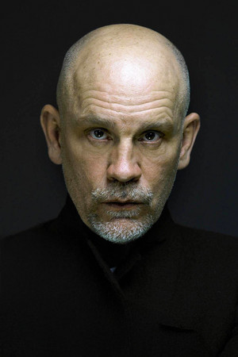
 赤焰战场
赤焰战场 蒙上你的眼
蒙上你的眼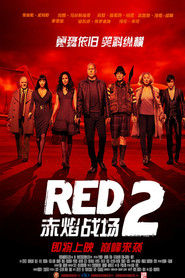
赤焰战场2短评（轻微剧透）
轻微剧透：真正的转折不在找到真凶，在克里斯汀被关进精神病院之后——那所医院里住的几乎全是「不肯听话」的女人，医生的问题从来不是「你病了吗」，而是「你还说不说」。轻微剧透：伊斯特伍德最冷的一处处理，是那个假儿子和真儿子始终没有给出答案：片子把真相交还给了永远悬着的问题，而这恰恰是真实案件的样子。朱莉在火车站辨认孩子那场戏，是全片唯一一次让镜头逼着她一个人扛。
为什么值得一看
想看「体制怎么对付一个不合作的人」的人；能接受 141 分钟偏长、反派写得比较脸谱、结尾不做解答的观众。R 级，含儿童受害相关陈述与精神病院虐待画面，建议高中以上观看。内地未映。看完想继续：《熔炉》《因父之名》《辩护人》。
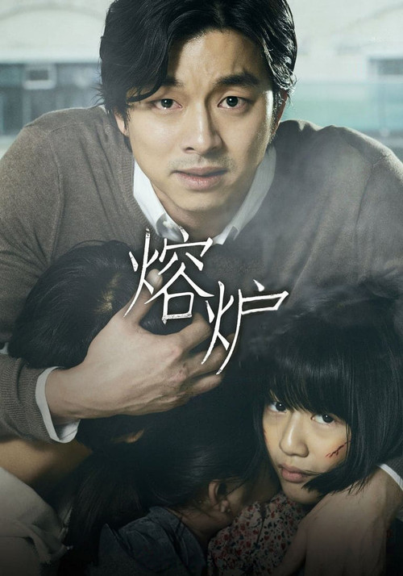
熔炉 Silenced
「我们一路奋战，不是为了改变世界，而是为了不让世界改变我们。」
剧情梗概
美术老师姜仁浩从首尔来到雾津的慈爱聋哑学校任教。他花了一大笔钱才拿到这个职位，进来之后才发现这里不对：孩子躲着他，走廊尽头有声音，教导主任在办公室里打人。他开始问，然后开始查，最后在法庭上用手语把这一切说出来——而对面坐着的是校长、律师、法官，和一整个镇子。
亮点
- 黄东赫自编自导，这是他的第二部长片；改编自孔枝泳 2009 年的同名小说，原型是 2000–2005 年光州仁和聋哑学校的真实性侵案。
- 2011 年 9 月 22 日在韩国上映，观影人次超过 570 万；上映后三个月，韩国国会通过《性侵害犯罪处罚特例法修订案》，民间称「熔炉法」，废除了对未成年人与残障人性侵犯罪的追诉时效。
- 这是 21 世纪韩国电影改写国家法律最著名的一次；2014 年该案重启，多名受害者获得国家赔偿。
- 孔刘演姜仁浩，这个角色让他从「偶像演员」变成韩国电影的中坚；郑裕美演人权组织成员徐宥珍。
- 张光一人分饰校长与行政主任这对孪生兄弟；金贤秀演听障学生金妍斗，凭此片拿到多个新人奖提名。
- 豆瓣 9.3（超过 100 万人评价）/ 烂番茄 72% / Metacritic 75 / IMDb 8.0：本期豆瓣最高，也是本期唯一一部直接改写了法律的电影。
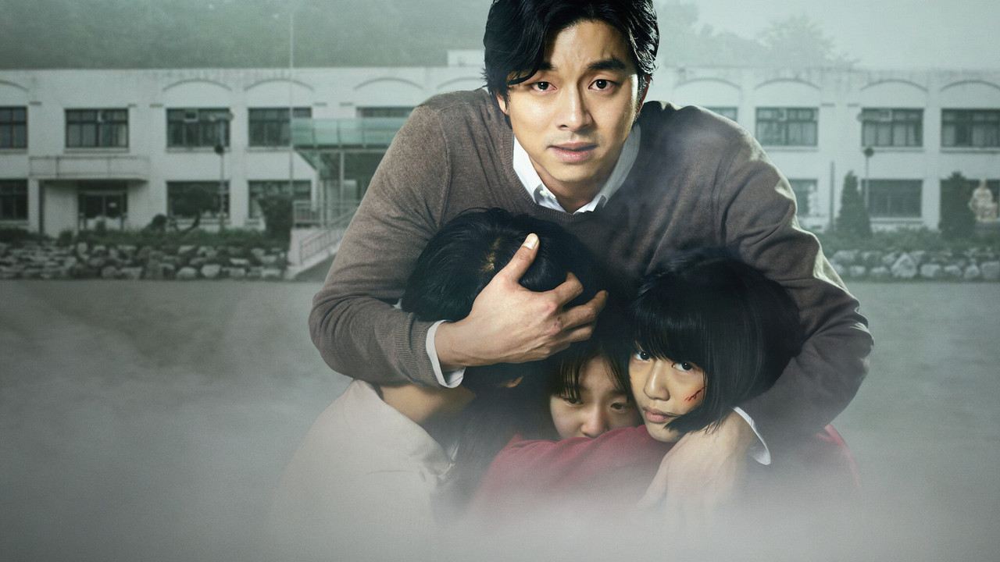
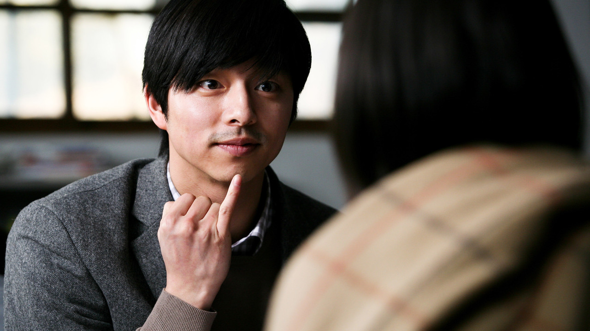
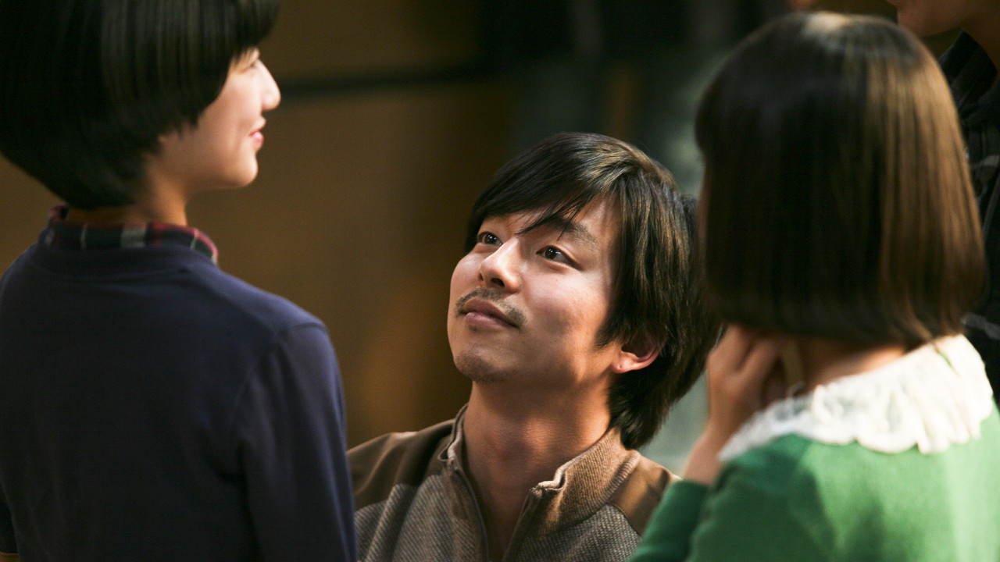
导演与主创 · 他们的历史作品
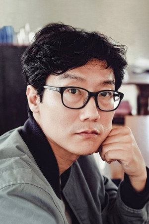
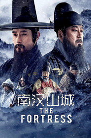
南汉山城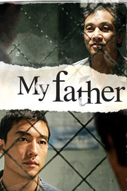
我的爸爸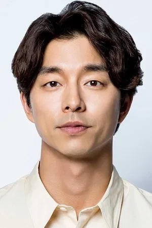
 釜山行釜山行
釜山行釜山行 眠
眠 念力
念力短评（轻微剧透）
轻微剧透：真正的转折不在法庭宣判，在宣判之后——加害者只判了几个月、缓刑、当庭释放，而三个孩子里已经有一个死了。轻微剧透：黄东赫把「雾」做成了一整套视觉：雾津的雾从第一帧挂到最后一帧，它不只是气氛，是这个镇子对这件事的共同态度。结尾那场在水炮里举着遗照的戏，是全片唯一一次把镜头从主角身后挪开、放进了人群里。
为什么值得一看
想看「一部电影到底能改变什么」的人；能接受题材极沉重、侵害场面点到即止却足够难受、结尾不给你安慰的观众。含儿童性侵相关情节，心理承受力弱的慎看。内地未映。看完想继续：《素媛》《辩护人》《狩猎》。
辩护人 The Attorney
「从今天起，我不再只是个赚钱的律师。」
剧情梗概
1978 年，只有高中学历的宋佑硕考过了司法考试，先当法官，很快转行做律师。他从不动产代书做起，被同行笑话成到处派名片的，但他赚到了钱，也还了当年欠一位饭店大婶的一顿饭。1981 年，那位大婶的儿子因为参加读书会被当成左翼抓走、被刑求逼供。佑硕接下了这个案子。
亮点
- 杨宇硕自编自导，这是他的长片处女作；他此前学的是法律，剧本写了四年。原型是已故韩国前总统卢武铉担任律师时承办的「釜林事件」。
- 韩国观影人次超过 1137 万，是 2013 年韩国本土票房第二；豆瓣 TOP250 常年在前 100。
- 宋康昊演宋佑硕，凭此片拿到多个韩国电影奖项的最佳男主角；任时完演被刑求的学生朴镇宇，这是他第一次演电影主角。
- 影片上映后的第二年（2014 年 9 月 25 日），「釜林事件」复审宣判，33 年前被判有罪的五名被告被认定无罪。
- 郭度沅演那个刑求学生的警官，是全片最让人咬牙的角色；吴达洙演佑硕的事务长，负责这部片为数不多的笑点。
- 豆瓣 9.2 / 烂番茄 77%（仅 12 条影评，样本极少，已在卡片里标星号）/ Metacritic 55 / IMDb 7.7：本期华语与欧美专业评价落差较大的一部。
导演与主创 · 他们的历史作品
 铁雨
铁雨
 寄生虫
寄生虫 雪国列车
雪国列车 杀人回忆
杀人回忆 汉江怪物
汉江怪物短评（轻微剧透）
轻微剧透：真正的转折不在法庭辩论，在佑硕第一次被叫去谈「认罪协商」——他们要的不是他输，是要他承认这套程序是对的。轻微剧透：这部片最聪明的一处是前半段：它花了整整四十分钟拍一个只想赚钱的人怎么赚钱，所以后来他放弃这些东西时，你才知道代价有多大。结尾那一排律师站起来报名的镜头，是全片唯一一次让主角不再是主角。
为什么值得一看
想看「一个人怎么被一件事改变」的人；能接受法庭戏台词密集、韩国现代史背景需要一点功课、后半段情绪推动明显的观众。含刑求与暴力画面，建议高中以上观看。内地未映。看完想继续：《熔炉》《出租车司机》《首尔之春》。
全民目击 Silent Witness
「你以为你看到的就是真相。」
剧情梗概
富豪林泰的准新娘死在地下车库，所有证据指向他的女儿林萌萌。林泰请来知名律师周莉辩护，公诉方派出的是检察官童涛——他跟林泰打了十几年官司，一次都没赢过。庭上每出现一个新证据，案子就翻一次；翻到第三次，你才发现前面看到的都不算数。
亮点
- 非行自编自导，这是他的第二部长片；他此前主要做编剧，这部片的三段式结构是他自己搭的。
- 孙红雷演林泰，郭富城演检察官童涛，余男演律师周莉——三个人在法庭上的对手戏撑起了全片。
- 本片被韩国买下版权翻拍（崔岷植主演的《沉默的目击者》），是国产悬疑片里少见的被翻拍案例。
- 全片用同一桩案子讲了三遍：每一遍换一个视角，每一遍都有意漏掉上一遍最关键的几分钟。
- 邓家佳演女儿林萌萌，是这部片里唯一一个全程被别人讲述、自己几乎没说话的角色。陈思诚也在片中出演，并在六年后监制了本期的《误杀》。
- 豆瓣 7.7 / 烂番茄未收录 / Metacritic 未收录 / IMDb 7.0：三个海外平台两个未收录，但 IMDb 上有超过 2000 条评价。
导演与主创 · 他们的历史作品
 蒙古王
蒙古王 毒战
毒战短评（轻微剧透）
轻微剧透：真正的转折在第三次庭审——前两次你以为问题是「谁杀的」，第三次才告诉你问题应该是「谁替谁顶的」。轻微剧透：这部片把悬疑片惯用的叙述性诡计搬上了法庭：每个视角都是一份证词，而证词天然就是被剪过的。结尾那段独白是全片唯一一次让镜头离开法庭，也是它最被人记住的原因——它把案子的答案换成了另一个问题。
为什么值得一看
想看「国产悬疑片能把反转做到什么程度」的人；能接受人物动机略显极端、部分法律程序经不起推敲、情绪戏偏重的观众。含暴力与死亡画面，建议初中以上观看。内地流媒体可看。看完想继续：《十二公民》《误杀》《心迷宫》。
十二公民 12 Citizens
「我投无罪。」
剧情梗概
一所政法大学的模拟法庭，家长们被叫来组成陪审团，就一起「富二代杀父」的案子给出一致意见。第一轮投票，十一票有罪，一票无罪。剩下的一小时里，那一个人要说服十一个人——或者被十一个人说服。屋子里有出租车司机、小卖部老板、退休老人、医生、保安，每个人带来的都不只是意见。
亮点
- 徐昂导演，这是他的电影处女作；他此前是话剧导演（《喜剧的忧伤》），全片几乎在一间仓库里拍完。
- 改编自 1957 年的《十二怒汉》（西德尼·吕美特导演、亨利·方达主演）；2014 年在罗马电影节拿到最高奖。
- 何冰演 8 号陪审员，是那个投「无罪」的人；韩童生演 3 号陪审员，是最后一个改主意的人，两人最后那场对峙是全片的核心。
- 成本约 1000 万元，内地票房约 1300 万元（院线票房不高，靠国际版权回收成本）；豆瓣 8.4。
- 因为中国没有陪审团制度，剧本把它改成了「模拟陪审团」——这个设定既是妥协，也成了这部片最诚实的一处说明。
- 豆瓣 8.4 / 烂番茄未收录 / Metacritic 未收录 / IMDb 7.1：本期唯一一部几乎没有海外发行的中国片。
导演与主创 · 他们的历史作品
短评（轻微剧透）
轻微剧透：真正的转折不在证据被推翻，在 3 号陪审员为什么坚持——他反对的根本不是这个案子，是他自己跟儿子的那笔账。轻微剧透：徐昂最聪明的一处，是把十二个人的社会身份直接写成了偏见：每个人开口第一句就在替自己那个群体说话，所以这部片真正讨论的不是「有没有罪」，而是「你凭什么确定」。结尾那句关于「怀疑」的话被留在了最后，没有给答案。
为什么值得一看
想看「一群人关在一间屋子里能把戏扛到什么程度」的人；能接受全片几乎无外景、台词密集、部分人物写得功能化的观众。无血腥画面，适合初中以上观看。内地流媒体可看。看完想继续：《全民目击》《误杀》《十二怒汉》。
误杀 Sheep Without a Shepherd
「我没什么本事，能做的只有挡在你们前面。」
剧情梗概
在泰国打拼的华人李维杰开着一家网络公司，日子不大不小。大女儿平平在夏令营被警察局长的儿子侵犯，反抗中对方死了。李维杰没有报警，他看过的上千部电影教会了他一件事：只要把时间线剪碎，所有人都会替你作证。他把一家人两天的行程重新剪了一遍，然后等着警察来问。
亮点
- 柯汶利导演，陈思诚监制；翻拍自印度电影《误杀瞒天记》（2015），保留了原作的核心诡计，把背景整个搬到了泰国唐人街。
- 内地票房超过 13 亿元，是 2019 年贺岁档票房冠军；入选豆瓣 2019 年度十佳华语片。
- 肖央演李维杰——这是他从喜剧演员转向正剧的关键一部；谭卓演妻子阿玉，陈冲演警察局长拉韫，两位母亲的对峙是全片最被人记住的段落。
- 片中「蒙太奇」这个词被直接说了出来：李维杰靠看电影学会剪辑时间，这个设定既是谜底也是主题。
- 剧组提前 150 天开始场景设计，共 3489 张设计图，实地堪景 27 次，动用 3869 名当地群演还原曼谷唐人街。
- 豆瓣 7.5 / 猫眼 9.5 / 淘票票 9.3 / IMDb 未收录：本期唯一一部用票务平台评分替代海外评分的电影。
导演与主创 · 他们的历史作品
 默杀
默杀 唐人街探案2
唐人街探案2 唐人街探案
唐人街探案短评（轻微剧透）
轻微剧透：真正的转折不在「尸体在哪」，在李维杰到底有没有动手——前面所有的剪辑都是他做的，但那一下不是。轻微剧透：这部片把悬疑片的「诡计」拍成了父爱的一种形式：他不是在脱罪，是在把罪名挪到自己身上，好让妻子和女儿不用开口。结尾他自首那场戏是全片最有争议的一笔，也是它跟原作最大的不同——它选择把问题留在了道德这一边。
为什么值得一看
想看「国产类型片能把推理做到多扎实」的人；能接受中段节奏很快、部分情节靠巧合推动、结尾处理会有争议的观众。含侵犯与暴力相关情节，建议高中以上观看。内地流媒体可看。看完想继续：《误杀瞒天记》《全民目击》《心迷宫》。